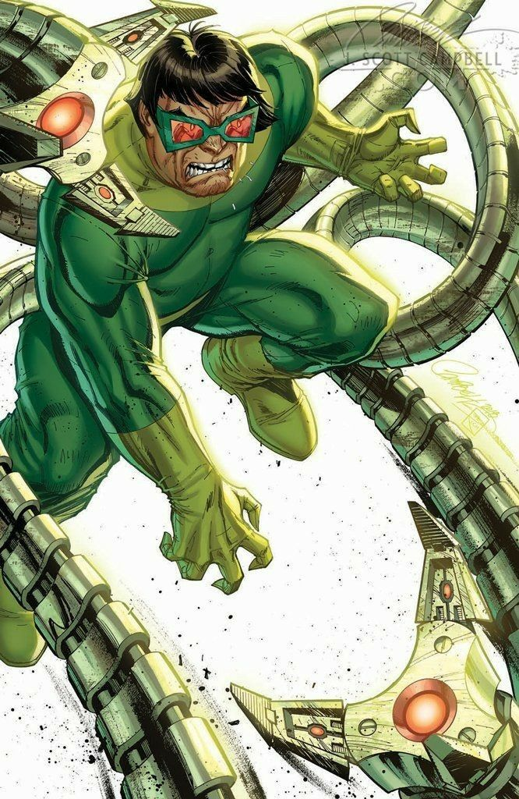
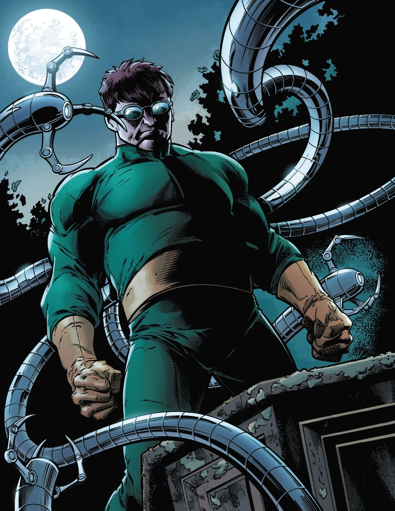
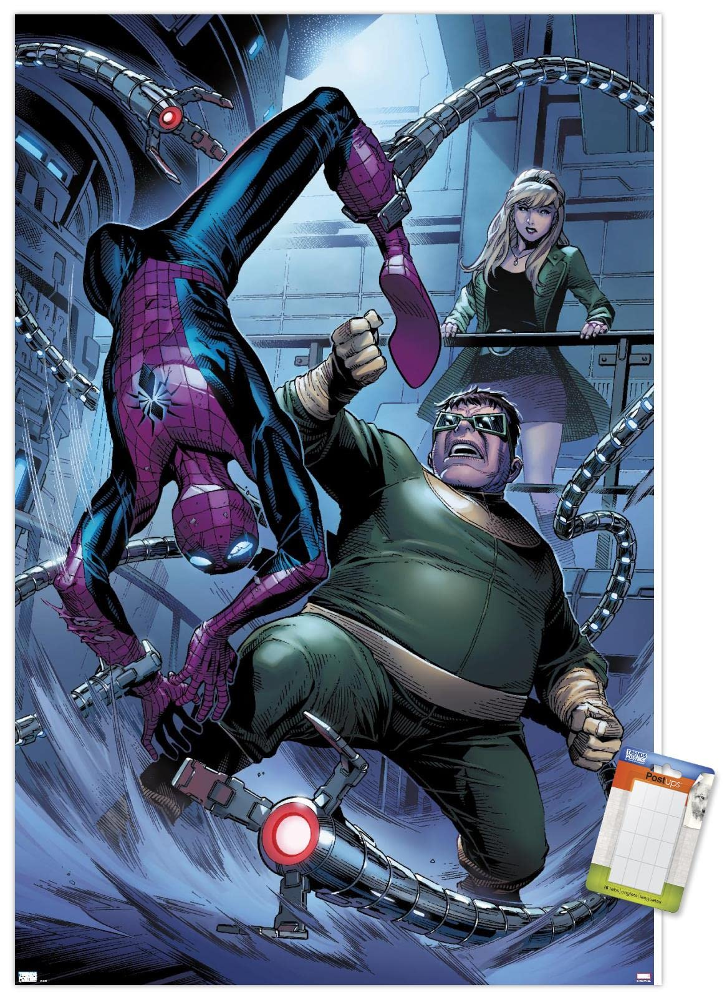
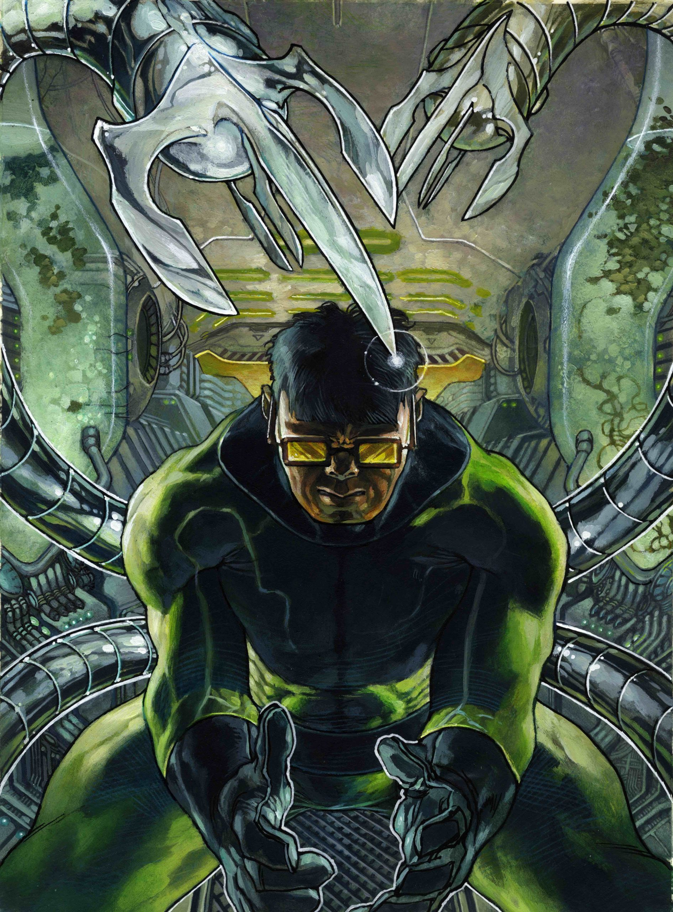
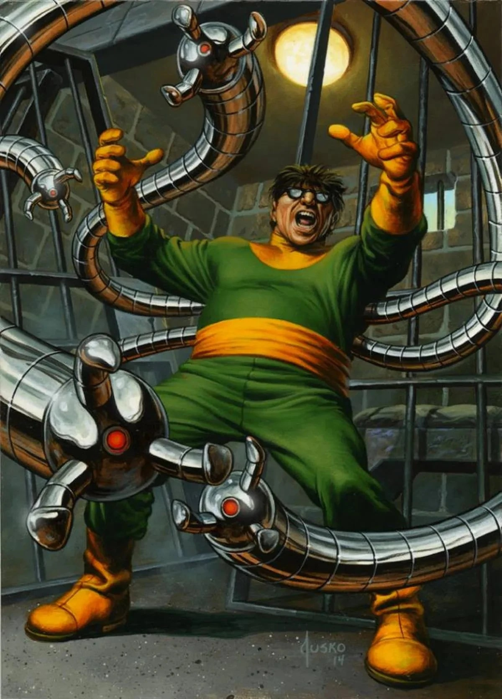
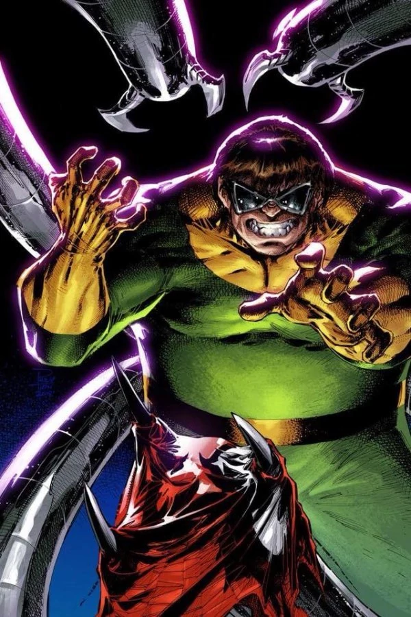
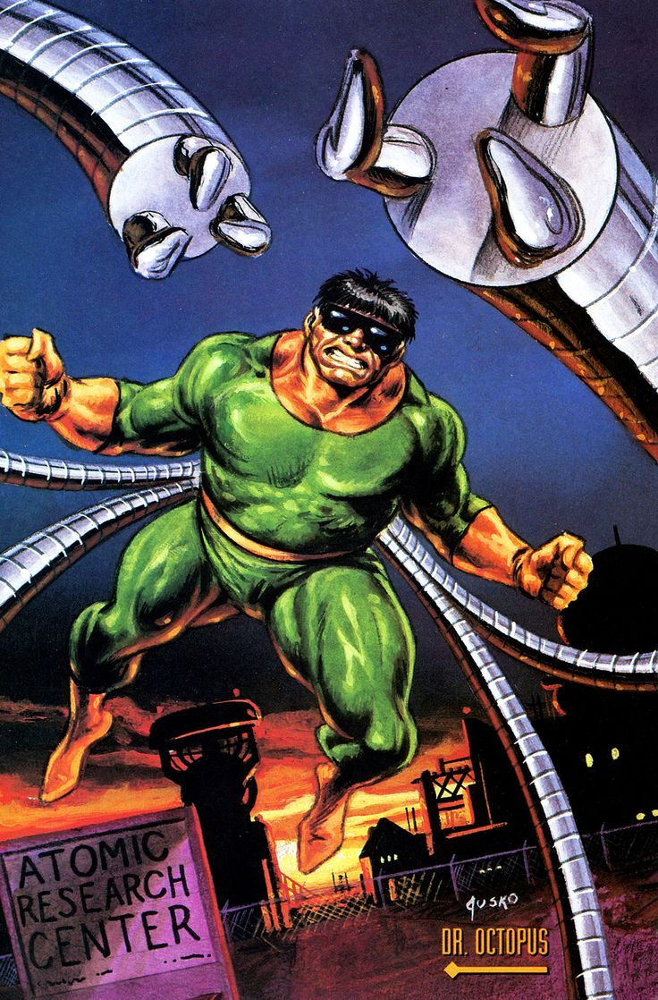
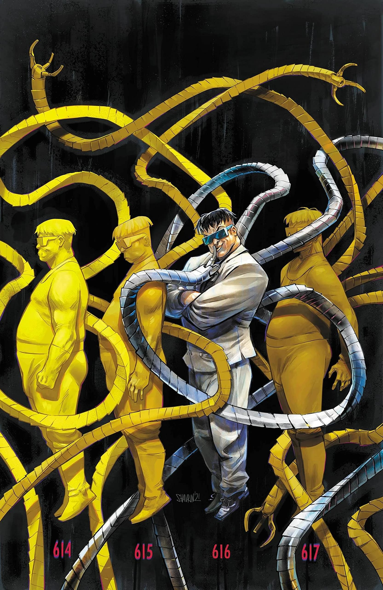

Superior Spider-Man (Otto Octavius) (Terre-616)
/images/tn34nuh4vuq71.jpg)
Histoire :
Otto Octavius, plus connu sous le nom du Docteur Octopus, est en train de mourir, après que son corps ait subi trop de dommages tout au long de sa carrière de super-vilain.
Il devient de plus en plus déprimé et effronté dans ses plans contre Spider-Man, améliorant son corps affaibli à l'aide de la technologie, et en essayant d'exercer un contrôle sur New-York avec l'aide de ses Octobots nouvellement créés.
Dans ses tentatives désespérées pour prolonger sa vie, Otto reforme les Sinister Six.
Au cours des mois suivants, Octopus et Spider-Man continuent de croiser leurs chemins, avec les Avengers et les Quatre Fantastiques luttant contre la nouvelle itération des Sinister Six.
Otto tourna ensuite son attention sur Tony Stark, se rappelant leurs anciens différends des années auparavant.
Il fit kidnapper Tony, tout en prenant en otage ses associés par l’intermédiaire des Sinister Six.
Se souvenant des moqueries de Tony des années plus tôt, Otto le mit au défi de lui trouver un remède, sous la menace d'une bombe nucléaire.
Stark réussit néanmoins à lui échapper, tandis que Pepper Potts libérait les otages grâce à l'armure de Rescue.
Le Dr. Octopus prétendit de son côté n'avoir enlevé Stark que pour prouver son incapacité à désamorcer la bombe, et donc son infériorité intellectuelle devant lui.
Octavius mettra ensuite au point un plan sinistre, en volant de la technologie à Hank Pym, à la Future Foundation de Reed Richards et à l'Intelligencia.
Il fit ensuite construire un vaisseau, la Octavian Lens, en mesure de modifier le climat de la planète en améliorant ou en étouffant les rayons solaires.
Au début, il affirme avoir une intention bienveillante, voulant mettre un terme à l'effet de serre en échange de gratitude et de reconnaissance, mais il est bientôt exposé par Spider-Man, Black Widow et Silver Sable, et son véritable plan (immoler une grande partie du monde) est mis à jour.
Spider-Man le défait ensuite brutalement, ouvertement moqueur et réprimandant ses efforts en affirmant qu'il allait bientôt mourir seul, oublié et sans héritage.
Mais même la captivité et l'incarcération sont incapables d'arrêter Otto.
Depuis que Spider-Man fut contraint d'accéder à plusieurs reprises à l'intelligence collective des Octobots, il a donné à son insu à Octopus un accès illimité à son esprit, et comme tel, il devient désormais capable de programmer un seul Octobot pour échanger leurs modèles mentaux.
Après une fourbe ruse, Octopus échange sa conscience avec celle de son ennemi, et prend désormais possession de son corps, piégeant alors Peter dans son ancien corps agonisant.
Peter essaiera tant bien que mal de retourner dans son corps, mais rien n'y fera.
Octavius viendra lui rendre visite sur son lit de mort, pour contempler sa victoire, et Peter lui fera promettre de respecter les valeurs de Spider-Man, avant de mourir dans le corps mutilé d'Octavius.
Affolé, Otto (dans une subite poussée d’empathie pour son ennemi juré) s'engage à se détourner de l'infamie et accepte la dernière volonté de Peter.
Il se jura de devenir un bien meilleur Spider-Man que l'original n'a jamais pu être, un Spider-Man Supérieur.
Le Superior Spider-Man
Possédant désormais le corps de Spider-Man, Otto Octavius commence sa nouvelle carrière de héros par la refonte complète de son équipement, et à mettre son passé de vilain derrière lui.
Cependant, il se retrouve vite être la cible de plusieurs vilains, notamment un Homme aux échasses amélioré avec la technologie du Docteur Octopus, Boomerang, Overdrive, Shocker, Speed Demon, le Scarabée, et de tous ceux essayant de reprendre la place laissé par l'apparent décédé Docteur Octopus et ses Sinister Six.
Bien que les ennemis d'Octopus ne soient pas de taille face au nouveau Spider-Man, la violence et ses nouvelles manières commencent à alerter plusieurs des amis et proches alliés de Peter Parker, notamment de Daredevil, de Wolverine, ainsi que de Mary Jane Watson.
Il est révélé plus tard que l'esprit de Peter est toujours actif, caché quelque part dans la psyché d'Octavius, celui-ci se promettant de reprendre le contrôle de son corps avant qu'Octavius n'aille trop loin avec ses ennemis (Otto bat Boomerang presque à mort, avant que la conscience de Parker ne le retienne) ou même avec Mary Jane.
Avec le corps de Peter, Octavius continue de sortir avec Mary-Jane, avec l'intention de devenir plus intime.
Après qu'un des Spider-Bots de Otto détecte Mary Jane en danger et la sauve du gang du Vautour, MJ se décide de l'embrasser, mais Otto l'arrête car, commençant à développer de véritables sentiments pour elle, veut la protéger des ennemis de Spider-Man.
Cela surprend MJ (et Peter), Otto disant à MJ qu'il met fin à leur relation en lui conseillant de tourner la page, mais promet de continuer à la protéger.
Après ses réalisations, Otto se révèle toujours être hanté par l'esprit persistant de Peter, incapable de reprendre le contrôle de son corps, entravant activement les efforts d'Otto pour s'écarter des valeurs de Parker tout en essayant de récupérer son corps.
Malgré tout, Otto se décide à « rectifier » plusieurs erreurs : Il s'inscrit de nouveau à l'université, poursuit activement la thèse que Peter avait contesté par le passé, et brise la règle de Parker de « ne pas tuer », en prenant une position proactive contre les malfaiteurs et les criminels, en tirant sur le vilain Massacre, et agressant violemment Screwball pour une insulte mineure.
Ces actions incitent les Avengers à confronter « Spider-Man » sur ses activités récentes, en suggérant que leur ami n'aurait jamais agi de cette manière.
Après analyse, il se révèle que Spidey est toujours (biologiquement) Peter Parker, Otto leur explique qu'il fait simplement face au stress des événements récents.
Le Spider-Verse
Alors que le Spider-Man 2099 arrive à notre époque, se rendant dans le passé pour faire face à une anomalie temporelle, Otto l'attaque, obsédé par l'idée de garder son identité secrète.
Ce combat résulta en la destruction de Horizon Labs, et Otto a été transporté en 2099, sur la Terre-928.
Il s’installa dans l'ancien appartement de Miguel et programma une IA sous les traits d'Anna Maria, une des conquêtes d'Otto.
Il décida ensuite de retourner dans son présent, en volant ensuite du matériel chez Stark-Fujikawa et Alchemax.
En tentant de voyager dans le temps, il y parvint mais se retrouva dans des univers parallèles.
Dans le premier, Spider-Man était récemment décédé, dans le second il découvrit un Spider-Man ayant intégré les Quatre Fantastiques (désormais les Cinq), dans un autre il était en train de se conformer à la Loi de recensement des super-héros, dans un quatrième il vivait dans la réalité House of M en tant que mutant célèbre, et dans une autre encore, il était vêtu d'une armure de fer noir, tous furent tués par un être doté d'une source d'énergie unique.
Otto comprit que quelqu'un éliminait les Spider-Man de chaque univers et entreprit donc de voyager entre eux.
Il finit par arriver dans un univers où vivait un Spider-Man indien attaqué par l'être responsable de la mort des Spider-Men.
Il le sauva et s'échappèrent pour retourner en 2099, révélant qu'Otto avait déjà recruté d'autres Spider-Men, dont Spider-Monkey, Spider-Man Noir, un Spider-Man à six bras et Spider-Girl.
Il a ensuite trouvé et sauvé un Spider-Man devenu assassin après avoir quitté New-York pour rejoindre Wolverine en Russie, et l'a recruté pour lutter contre le tueur de Spider-Man.
Au fil du temps, Otto rassembla une armée de Spider-Man à travers le multivers (la Superior Spider-Army) pour lutter contre Karn et les Héritiers.
Son équipe rencontra une seconde équipe de Spider-Men, dont faisait partie le Peter Parker de la Terre-616.
Informé de l'existence des Spider-Totems par Ezekiel Sims, Otto rejeta l'idée d'êtres surnaturels.
Lorsque Daemos attaqua, attiré par la présence de l'Autre et de l'Épouse (deux des Totems fondamentaux), Otto se dressa face à lui et le tua.
Mais il s'agissait en réalité d'un clone, et les Totems furent contraints de se séparer lorsque Daemos revint avec des renforts, tuant plusieurs membres de l'équipe d'Otto dans l'attaque.
Par la suite, Otto déclara qu'ils étaient en guerre contre les Héritiers et qu'il était désormais le chef des Spider-Men, sans discussion possible.
Le Peter Parker de la Terre-616 contesta son autorité, affirmant avoir été nommé chef par les autres pour avoir déjà combattu et vaincu un Héritier, Morlun.
Otto s'en moqua, et reçut un coup de poing au visage pour son arrogance.
Les équipes des Superiors et des Amazing s'affrontèrent, jusqu'à ce qu'Otto révèle qu'il pensait que Peter venait d'une époque avant sa prise de contrôle.
Peter exploita cette révélation en se rendant et en défiant Otto de prouver sa supériorité en le tuant.
Otto refusa, pensant que tuer Parker mettrait sa propre existence en péril, et Peter le vainquit d'un seul coup.
A la surprise d'Otto, Peter l'aida à se relever, admettant qu'ils auraient besoin de son expertise et de ses conseils pour la bataille à venir.
Acceptant son rôle de conseiller, Otto suggéra aux Totems de quitter Central Park pour s'installer en ville, mais Captain Universe s'y opposa, affirmant que tant qu'il serait là ils seraient en sécurité.
Spider-Man quitta ce monde avec une équipe pour remettre un dispositif de camouflage au Spider-Man Noir blessé et recruter d'autres membres au passage, et Otto en profita pour défier Spider-UK (placé en chef d'équipe en attendant le retour de 616) en combat pour le poste.
Après que Solus, le chef des Héritiers, aient débarqué en surprise sur Terre-13 et vaincu Captain Universe ainsi que le Spider-Man japonais accompagné de son Leopardon, la Spider-Army se réfugia sur Terre-3145, un monde ravagé par une guerre nucléaire, où ils rencontrèrent le Spider-Man de cette réalité, Ben Parker.
Otto fut horrifié d'apprendre que le Docteur Octopus de cette réalité était responsable de cette désolation.
Lorsque Peter fit une remarque sur la ressemblance entre son IA et Anna Maria, Otto compris que Peter venait en réalité d'une époque ultérieure à la sienne, et qu'il était donc condamné à perdre le contrôle de ce corps.
Lors de l'ultime bataille contre les Héritiers, Otto tenta d'affronter Daemos, mais deux de ses pattes mécaniques lui furent arrachées.
Lorsque Morlun railla, proclamant que le retour de l'Enfant (le troisième des Totems fondamentaux) sur Terre-982 ne faisait que retarder l'inévitable, Otto proclama avoir trouvé une « solution supérieure » que Peter et les autres Spiders étaient trop aveugles et lâches pour voir, et il trancha la gorge du Maître Tisseur (le protecteur de la Toile de la Vie et du Destin), sous les yeux horrifiés de Morlun et de Peter.
Après la défaite des Héritiers, Otto surprit une conversation où Miguel O'Hara déclarait que la Toile de la Vie et du Destin pouvait être utilisée pour les renvoyer dans leurs univers et époques respectives.
Il se jeta alors sur la Toile, refusant de retourner dans son monde en connaissant le destin qui lui était réservé.
Alors que les Spiders regagnaient leurs mondes, les Spiders de la Terre-616 s'unirent pour lui résister.
Après avoir échoué à nouveau, Otto se résigna à rentrer à son époque, ses souvenirs de cette bataille effacés, bien qu'il ait laissé des instructions à son IA pour qu'elle se réactive dans cent jours.









/images/ASM700-49.jpg)
/images/How-Doctor-Octopus-Became-The-Superior-Spider-Man-10.jpg)
/images/Supsm2013001camunvar.jpg)
/images/tumblr_osjijkYaZs1vo91g7o1_640.jpg)
/images/rAbrbgm.jpg)
/images/5b1e3199c239bec14f811cfc389a2ce1.jpg)
/images/3047807-scarspider_20-cover.jpg)
/images/Superior_Spider-Man_Vol_2_4_Textless.jpg)
/images/Superior_Spider-Man_Vol_1_1_Textless.jpg)
/images/7WZ28qm.jpg)
/images/07d75125a4dcd194b24af6e55b4ed621.jpg)
/images/cc29af044e961b652c8ed2c24e33b7b3.jpg)
/images/93dc11584be0b74576d97bc7c33b3a52.jpg)
/images/Otto_Octavius_29_from_Uncanny_Avengers_Vol_1_15_0001.jpg)
/images/Peter_Parker_29_from_Spider-Man_Deadpool_Vol_1_17_001.jpg)
/images/Superior_Spider-Man_Annual_Vol_1_1_Textless.jpg)
/images/Superior_Spider-Man_Version_1.jpg)
/images/bDfNJn7.jpg)
/images/f79a444ddf8dfcf6f4a18b51825af9fc.jpg)
/images/Superior_Spider-Man_Vol_1_14_Textless.jpg)
/images/Superior_Spider-Man_Returns_Vol_1_1_Lashley_Second_Printing_Variant.jpg)
/images/Superior_Spider-Man_29_29_from_Murderworld_Spider-Man_Vol_1_1_001.jpg)
/images/Superior_Spider-Man_Vol_1_15_Textless.jpg)
/images/f7beb43ce3cf0c4053d793f04ffc6742.jpg)
/images/images.jpg)
/images/7b50ce3ac9bec0c3d4f566d1068e7d2b.jpg)
/images/kVo6ddO.jpg)
/images/b4f32c9858b5650741e3f50af3c13396.jpg)
/images/ce468da723a11f486770a928fd188292.jpg)
/images/Otto_Octavius_29_001.jpg)
/images/Otto_Octavius_29_002.jpg)
/images/Otto_Octavius_29_from_Superior_Spider-Man_Vol_1_6AU_29.jpg)
/images/qGcR6Ha.jpg)
/images/STL285498.jpg)
/images/superior_spiderman_1_2018.jpg)
/images/supsmret2023001_cov_0.jpg)
/images/WXByozR.jpg)